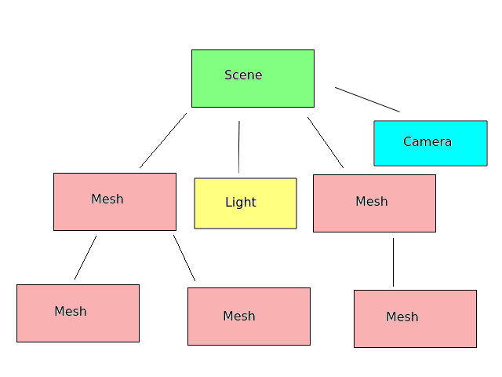

There are two topics this week. Firstly we will introduce JavaScript modules and also look at how bundlers such as Webpack can make our life easier. Modules are increasingly commonly used in web development and are also essential for using three.js add-ons.
We will be using three.js add-ons for the second topic of the week, loading and displaying 3D models.
We have looked at client-side JavaScript in this module as well as in COM518 and first-year web. However, so far, we have not created any large, complex JavaScript applications. So far, the approach has been to save your JavaScript in an external .js file, and include it
into your HTML, e.g.
<script type='text/javascript' src='script1.js'></script>
However, when writing larger and more complex JavaScript applications (such as those we will write in this module), you will find that this approach will quickly become difficult to manage, as you will write multiple JavaScript files and have to include each one in your HTML, for example:
<script type='text/javascript' src='script1.js'></script>
<script type='text/javascript' src='script2.js'></script>
<script type='text/javascript' src='script3.js'></script>
<script type='text/javascript' src='script4.js'></script>
<script type='text/javascript' src='script5.js'></script>
As can be seen, this quickly becomes quite unmanageable and makes your HTML code very messy. Furthermore, many websites rely on third party JavaScript libraries - such as three.js. These have to be included too, as we have done so far.
Hopefully you can see that for a complex web application with many JavaScript files, you'll end up with half your HTML code being links to external script files!
Clearly another way is needed and luckily there is one: the JavaScript module. A module is a reusable piece of JavaScript which can be imported into other JavaScript files. There have been various approaches to modules;
require() function.The whole idea of modules is to write reusable code that can be imported into any project. Here is an example of a simple module. You'll notice that most of it is simple JavaScript. Only the export statement at the end makes it a module.
function sayHello(name) {
console.log(`Hello ${name}!`);
}
function square(n) {
return n * n;
}
export { sayHello, square };
Note how this module contains two functions, sayHello() and square(), which display a greeting and calculate the square of a number, respectively. However the interesting thing is the statement at the end:
export { sayHello, square };
This statement exports the two functions, so that they can be used from the outside world. This file would be saved as a simple JavaScript file, e.g. module1.js.
A couple of other syntax points here, which you may not have encountered before:
console.log() writes a message to the developer console, which you can
view by going to the developer tools of your browser.We've created a simple module, but how might we use it from another file?
We need to import the functions that have been exported. Here's an example. You can imagine this is the "main" JavaScript function of your application, in other words the file which runs when the page is first loaded. This is often named index.js by convention.
// index.js - 'main' JavaScript file
// Import the two functions from the module.
// Note the './' before 'module1.js'. This means 'the current folder'
import { sayHello, square } from './module1.js';
// Call the sayHello() function from the module
sayHello("Fred");
// 'const' is a constant - like a variable, but can never change.
const a = square(3);
console.log(`The square of 3 is : ${a}`);
Note how we have to import the functions from the module before we can use
them. This makes for easier-to-read code as we can tell exactly where the
two functions sayHello() and square() have come from.
To actually make this code run, we need to link it to an HTML web page which
can be executed from the browser. We link the index.js file as that is the
main file of the application, and then the module1.js file will automatically
load.
We link a module in the same way as a regular JavaScript file, except we
use <script type='module'>. Note that the main JavaScript file,
index.js, is itself a module. It's the 'main module' of the application and
it's using another module, module1.js. For example:
<html>
<head>
<script type='module' src='index.js'></script>
</head>
<body>
...
Note that the standard for ECMAScript 6 modules is to use the .mjs extension (JavaScript module) rather than .js. However .mjs is not widely supported by browsers yet, so I'd advise you to use .js.
A critical point is that you have to access your site via a web server to use modules. If you have Node.js installed, you can easily set up a web server in the current folder with:
npx http-serverand then access pages on port 8080, e.g:
http://localhost:8080/index.html
It's possible to only import some functions from a module. For instance this version of our index.js code:
// index.js - 'main' JavaScript file
// Import sayHello() (only) from the module.
import { sayHello } from './module1.js';
// Call the sayHello() function from the module
sayHello("Fred");
// This will not work now, as square() was not imported from the module
const a = square(3);
console.log(`The square of 3 is : ${a}`);
The code above works, but it can be a little messy to import each function
separately. It would be nicer if we could collect together all module
exports as a single object so that the code is a bit more, well,
modular. This approach is frequently used with libraries, such as three.js. The next index.js example shows this:
// index.js - 'main' JavaScript file
// Import the two functions from the module into a module object 'MyModule'
import * as MyModule from './module1.js';
// Call the sayHello() function from the module
MyModule.sayHello("Fred");
const a = MyModule.square(3);
console.log(`The square of 3 is : ${a}`);
Note how this differs from the first two examples. First, consider the
import statement:
import * as MyModule from './module1.js';
Rather than importing each function separately, they are all being imported
as a single module object, MyModule. You can reference each exported
function by referencing the module object name, then a dot, then the function
name, for example MyModule.sayHello(...).
(To relate this to object-oriented programming, which we did in COM518 last year and you may have done elsewhere, MyModule is an object and sayHello() is a method of that object).
We can use third-party code, such as three.js, as modules. The standard for installing third-party libraries, both in Node.js and for the browser, is, as you have already seen in COM518, npm. npm or Node Package Manager is a standard way to install third-party JavaScript software as packages. So far we've used it for Node.js applications, but we can also use it for client-side code. For example, we can install three.js via npm with:
npm install three
As we saw last year, it is placed in a folder called node_modules. This contains all NPM packages installed into your current project. (Even though the name is node_modules, the approach is still used for client-side JavaScript).
How do we import a third-party module? The standard is to use the package name in the import statement. So to import three.js, we would ideally be able to use code such as this:
import * as THREE from 'three';This would import everything from the "three" package. If we are using Node.js, we can indeed import modules this way. However, web browsers do not yet support using package names (e.g. 'three') in import statements, so we have to use a file path, as in the first few examples. So we could do the following, in which we specify the full path to the three.js JavaScript file:
import * as THREE from './node_modules/three/build/three.module.js'This indicates the path to the three.js code within the
node_modules folder. This works, but only if you are using the core three.js library and not any add-ons. So everything we've done so far will work, but when you try to use add-ons, such as the add-ons for loading models that we're looking at this week, you will find you will get an error. This is because the add-on code uses the package name "three" within an import statement, and thus will not work in the browser. For example, the GLTFLoader add-on for loading glTF model files contains this import statement:
import {
AnimationClip,
// ... several other classes ...
sRGBEncoding
} from 'three';
which as we have seen, will not work in a browser, because it uses the package name 'three' rather than the full path.
So what do we do? We cannot use package names in our imports, because they are only supported by Node.js, not in browsers - and we cannot use full paths if using three.js add-ons, because the add-on code imported in this way includes package names. This is where bundlers come to the rescue.
A bundler is a piece of software which will take JavaScript code written in 'Node.js' style (i.e. directly referencing package names in import statements) and convert it to a form which is understandable by a browser. In fact, it will take many source JavaScript files and generate a single bundle (typically named bundle.js) as the output. The bundle can then be included into a web browser in the normal way (without type=module).
One of these tools is Webpack. Webpack can be installed with npm. As Webpack is a development tool, you want to install it globally, so that it is accessible to all applications on your system and all users. The -g option does this. (Normally, NPM packages are only installed locally into the project that needs them, within the project's node_modules folder).
npm install -g webpack webpack-cli
Here is the most simple usage:
npx webpack index.js
This will take the file index.js, and any modules it uses (along with any
modules used by those modules) and prepare a single output file - a bundle - which will, by default, be placed in the dist subfolder with the name
main.js. This can then be used directly in the browser e.g:
<script type='text/javascript' src='dist/main.js' defer></script>
(Note the defer prevents the bundle loading until the page has been loaded. If you do not do this, the bundle will be loaded before the page, which means if you try to access HTML elements from your JavaScript, you will get errors.)
One key advantage of using a bundler like Webpack is that the bundler automatically includes third-party NPM packages in the bundle, if they are imported in your code using the package name e.g.:
import * as THREE from 'three';
which will import three.js, as we saw above.
Due to time constraints, we will only take a brief look at Webpack configuration, enough to build a project making use of three.js and its add-ons. By default, Webpack will place its output in the file main.js within the dist folder, and it will also minify the code, in other words convert it into an unreadable but compact form for distribution.
However it is possible to configure Webpack to change this behaviour, and
this is done via the webpack.config.js configuration file. This is a
file, itself written in JavaScript, which allows you to modify Webpack's
default behaviour. Here is an example:
const path = require('path');
module.exports = {
mode: 'development',
entry: './index.js',
output: {
path: path.resolve(__dirname, 'dist'),
filename: 'bundle.js'
},
optimization: {
minimize: false
}
};
What is this doing?
mode can be either development or production. This impacts upon the amount of minifying that takes place (less in development, more in production; debugging is easier with an unminified bundle)./index.js (index.js in the current folder).
This means you can run Webpack withnpx webpack
rather than
npx webpack ./index.js
because the configuration file has told Webpack that the entry point of the
application will be ./index.js.
path is the folder where the output bundle will be placed. Here, we are specifying the output is the dist subfolder of the current folder, and the filename is bundle.js. So, the resulting bundle will be named bundle.js and not main.js. In fact, bundle.js is a better name as main.js is often used for the file containing the main JavaScript code, as an alternative to index.js.optimization options allow us to specify various ways in which the output will be optimised. Here, we are turning minification off by setting the minimize option to false. This can be useful for debugging, as you will not get helpful error messages with a minified bundle file.There are many other things you can do with Webpack, for example you can include CSS inside your bundle for easy distribution. See the website for more detail.
I would like to announce a contribution made by one of the students on this module which you may all find useful. You can use Webpack with a built-in live server, for easy development. Any files that the server is watching will be auto-reloaded whenever changes are made; furthermore, errors in your JavaScript will be displayed on the main browser window. Please see this repository for more details and feel free to ask myself or the contribution's author for more details.
Now we know how to import modules, we will nowstart to make our three.js applications look more realistic by looking at how we can add 3D models to our scene. Loading models requires three.js add-ons, for which import statements and a bundler are needed for the most efficient development process.
Most real-world 3D applications would use 3D models of real-world objects, such as people, animals or objects. These models typically consist of many small triangles; each triangle has three vertices (points). Triangles are typically used because 3D hardware is optimised to work with triangles.
Models also consist of:
Before we look at actually loading and displaying models, we will take a look at a fundamental component of three.js and other 3D engines - the scene graph. A scene graph is a hierarchical representation of the objects in the scene and their relationships, and is useful when dealing with models. The scene is at the top of the scene graph, and objects added to the scene (such as meshes, lights or cameras) are child objects of the scene. However, meshes themselves - in fact any Object3D - can have child objects: for example, we could load a mesh of a table and then place objects (such as a book and a lamp) on the table. The objects on the table would be child objects of the mesh and when the table moves or rotates, its child objects would move and rotate with it.
A typical scene graph is shown below:

Here is some example code. This creates a large red box and two smaller boxes (green and blue) and adds the smaller boxes to the large box as its children. The positions of the smaller boxes are relative to the large box, not the world and if you move or rotate the large box, the smaller boxes will move with it.
// Set up meshes
const box = new THREE.BoxGeometry(5,5,5);
const redMtl = new THREE.MeshLambertMaterial({color: 0xff0000});
const largeMesh = new THREE.Mesh(box, redMtl);
const smallBox = new THREE.BoxGeometry(); // default = 1,1,1
const greenMtl = new THREE.MeshLambertMaterial({color: 0x00ff00});
const blueMtl = new THREE.MeshLambertMaterial({color: 0x0000ff});
const smallMesh1 = new THREE.Mesh(smallBox, greenMtl);
const smallMesh2 = new THREE.Mesh(smallBox, blueMtl);
// add the large mesh to the scene
scene.add(largeMesh);
// position it in the world
largeMesh.position.set(0, 2.5, -10);
// add the small mesh as a child of the large mesh
largeMesh.add(smallMesh1);
// position is relative to its parent (the large mesh)
smallMesh1.position.set(-2, 3, 0);
// add the second small mesh as a child of the large mesh
largeMesh.add(smallMesh2);
// position is relative to its parent (the large mesh);
smallMesh2.position.set(2, 3, 0);
// rotate large mesh, small meshes will rotate with it
largeMesh.rotation.y = THREE.Math.degToRad(45);
There are various formats for 3D models. Two common formats, both supported by three.js, are:
The Wavefront OBJ format. This is a long-standing format which has been around since at least 1992. When working with the OBJ format, you typically have to deal with:
As discussed above, the three.js library itself does not provide any functionality for loading models. We have to use add-ons to perform the loading process. Here are two examples, one for OBJ and one for glTF.
import * as THREE from 'three';
import { OBJLoader } from 'three/examples/jsm/loaders/OBJLoader.js';
import { MTLLoader } from 'three/examples/jsm/loaders/MTLLoader.js';
// setup code (omitted...)
// Create an MTLLoader object to load the .mtl file
const mtlLoader = new MTLLoader();
// Load the MTL file. The specified arrow function will run once it's loaded
mtlLoader.load("models/pig.mtl", mtl => {
// The arrow function receives an object representing the material
// Create the materials
mtl.preload();
// Now the material file is loaded, create an OBJLoader to load the .obj file
const objLoader = new OBJLoader();
// Associate the material with the OBJ file to be loaded
objLoader.setMaterials(mtl);
// Load the OBJ file. The specified arrow function will run once it's loaded
objLoader.load("models/pig.obj", mesh => {
// The arrow function receives a mesh of the loaded model
// Set the mesh's position
mesh.position.z = -5;
// Add it to the scene
scene.add(model);
});
});
The comments in the code above explain how the code is working; note how we have to load the material (.mtl file) before we load the .obj file, and note how loading is asynchronous and we specify callback functions to run when the files have loaded. This is because model files are often rather large and may take a while to load; we do not want to prevent user interaction with the page while this is occurring.
Also note the import statements for the add-ons to load .obj and .mtl files:
import { OBJLoader } from 'three/examples/jsm/loaders/OBJLoader.js';
import { MTLLoader } from 'three/examples/jsm/loaders/MTLLoader.js';
Note how we access each add-on by first referencing the package (three) - which will be processed by the bundler to look inside the three folder in node_modules - and then access the add-ons by navigating the folder structure within the three package.
import * as THREE from 'three';
import { GLTFLoader } from 'three/examples/jsm/loaders/GLTFLoader.js';
// setup code (omitted...)
// Create a GLTFLoader
const gltfLoader = new GLTFLoader();
// Load the glTF file (the file with .gltf extension)
// This will automatically load materials and textures
// Specify an arrow function to run when the model is loaded
gltfLoader.load("models/shiba/scene.gltf", gltf => {
// To obtain the mesh, use the 'scene' property of the 'gltf' object received by the arrow function
const mesh = gltf.scene;
// Set its position and add it to the scene
mesh.position.z = -5;
scene.add(mesh);
});
The glTF loader is quite a bit simpler. We do not need separate stages to load the material and main model file, we just load the .gltf file and this will take care of loading all aspects of the model. As before, we provide an arrow function which runs once the loading is complete, and as before we need to import the add-on.
There are reasons why models might not appear as you expect them to. Note that models have their own, local coordinate system; the coordinates of each vertex are relative to the local origin of the model. The local origin is the point within the model which has coordinates x=0, y=0, z=0 in the model file. When the model is placed within the world at a particular world position, the local origin of the model will be placed at that world position.
In many cases this is what we want - the base of the model will have the local
coordinates 0,0,0 - but some models have negative y coordinates for some
vertices. This will result in the model being partially buried underground
if we add it to the world unchanged. So in these cases, if we wish the model
to rest on our world's surface (e.g. a plane), we may need to place
the model at a y coordinate above 0 in the world to compensate for the fact that some of the model's local y coordinates are negative. In this way we will ensure the entire model appears "above ground".
Also some models, by default, have a very large scale, e.g. the local x, y and z coordinates of the model range from, say, 0 to 100. It may be necessary
to scale then down (by setting the x, y and z scale to values below 1) to get the model to appear a sensible size. Any Object3D can be scaled using the scale property, e.g:
mesh.scale.set(0.5, 0.5, 0.5);
Make a copy of your work from last week and make the following changes:
index.js to import three.js as a module, as well as GLTFLoader.package.json file to specify the dependencies so that they can be all installed at once, such as the following which will install three.js as well as Webpack:
{
"dependencies": {
"three": "^0.133.0"
},
"devDependencies": {
"webpack": "^5.0.0",
"webpack-cli": "^4.7.0",
}
}
Create the file above and save it as package.json. Install the dependencies with:
npm installCreate a webpack.config.js as follows:
const path = require('path');
module.exports = {
mode: 'development',
entry: './index.js',
output: {
path: path.resolve(__dirname, 'dist'),
filename: 'bundle.js'
},
optimization: {
minimize: false
},
};
which will output to dist/bundle.js.
Change the script link in the HTML to load this bundle.
Build with:
npx webpack -w &This will run Webpack in "watch mode", so that if you make any changes to the code, Webpack will automatically rebuild the bundle. The & wil run Webpack in the background, so you can continue to use the console. You can move Webpack back into the foreground with
fg
Object3D has a translateX() function which will do this. Do the smaller meshes move with it?y coordinate so that it actually appears on the ground.e.code values for the arrow keys are ArrowLeft, ArrowRight, ArrowUp and ArrowDown. Make sure the model is facing in the appropriate direction when it moves!The advanced exercise is to implement a version of Sphere of Doom from last week using a model for the enemy. In my version, I used a model of a cow (a result of too many encounters with aggressive cows in the countryside!) but feel free to replace with something else. Like Sphere of Doom, make the model 'chase' the player at the camera position. See the Sphere of Doom instructions from last week for more detail.
You will need to make the model always face the player. For that, you will need to rotate it. Use the trigonometry discussed in week 2 to do this. You will find you need to use the arctangent (inverse tangent) to convert a tangent back to the angle. You can use the function Math.atan2() to calculate the angle given the opposite and the adjacent; remember that
tan θ = opposite/adjacentso
angle = Math.atan2(opposite, adjacent);